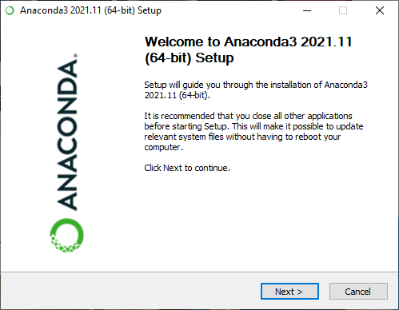
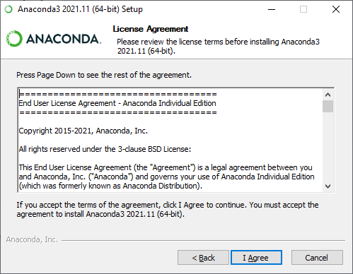
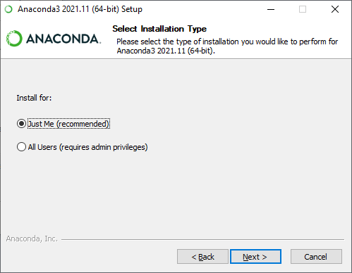
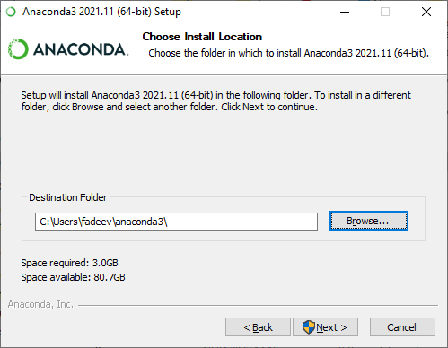
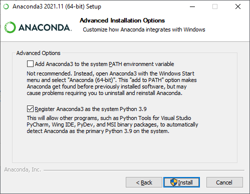
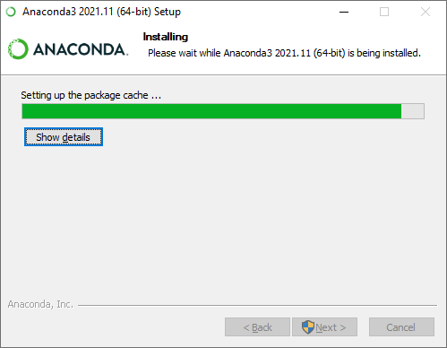
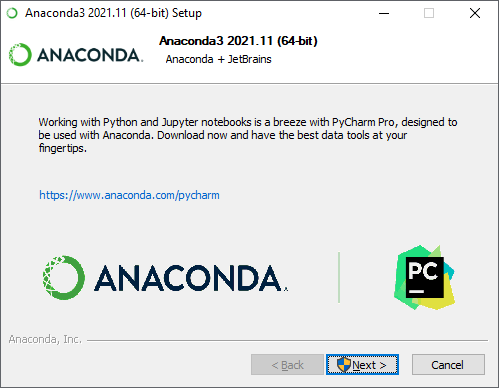
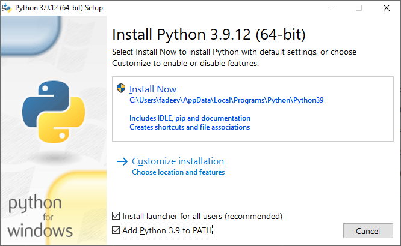
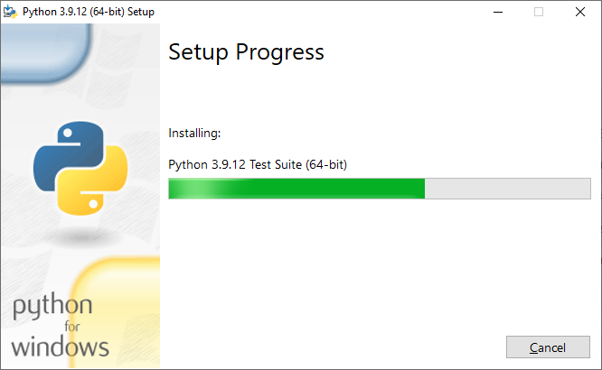

Установка python
Contents
Установка python#
python vs Anaconda#
Установить python можно сам по себе или в составе дистрибутива. При этом в научной среде нередко предпочитают устанавливать Anaconda, которая помимо самого python включает в себя
пакетный менеджер conda;
приложение
Anaconda Navigator, которое позволяет запускать приложения, устанавливать дополнительные библиотеки, настраивать окружения и др.;среду разработки spyder;
ряд предустановленных популярных научных библиотек, таких как
NumPy,Matplotlib,Pandas,jupyterlabи т.п.;и др.
Если вы установите Anaconda, то у вас автоматически будут установленны совместимые версии всех библиотек, которые вам потребуются в первом семестре нашего курса. Было время, когда нередко встречались проблемы с совместимостями сторонних библиотек при использовании стандартных средств python, а Anaconda собирала и распространяла набор заведомо совместимых между собой версий библиотек.
Тем не менее назвать Anaconda незаменимым нельзя даже для научных целей. Автор курса предпочитает устанавливать python сам по себе и устанавливать библиотеки по мере необходимости, используя пакетный менеджер PyPI, который поставляется с python. Сегодня PyPI справляется с зависимостями не хуже conda, но такой подход требует некоторого уровня знакомства с командной строкой.
Anaconda#
Установка#
Чтобы установить, скачайте установщик и следуйте инструкциям.
Note
Установите последнюю версию!







После установки запустите приложение Anaconda Navigator (обновите его, если выскочит предложение) и вы должны увидеть следующее окно.
Обновление#
Не лишним будет сразу после установки обновиться. Для этого познакомимся с инструментом Anaconda prompt, который по сути дела представляет собой командную строку с рядом надстроек для управления Anaconda. Запустить Anaconda prompt можно из Anaconda Navigator выбрав пункт “CMD.exe Prompt” или набрав в поиске “Anaconda prompt”. В открывшейся командной строке наберите следующую команду и нажмите клавишу Enter.
conda update anaconda
Больше информации о conda можно получить набрав conda help.
Тестирование работоспособности python#
Проверить работоспособность python в составе Anaconda можно также из “Anaconda prompt”. Наберите следующую команду и если в ответ появится сообщение с версией python, то установка прошла успешно.
python -V
В данном примере версия установленного python — 3.9.7.
CPython#
Установка#
В качестве альтернативы можно установить python сам по себе. Для этого необходимо скачать установщик с официального сайта, запустить его и следовать инструкциям. Рекомендуется поставить галочку напротив пункта “Add Python 3.X to PATH”.


Обновление#
После установки в качестве упражнения из командной строки обновите пакетный менеджер PyPI следующей командой.
python -m pip install update pip
Тестирование работоспособности python#
Наберите следующую команду и если в ответ появится сообщение с версией python, то установка прошла успешно.
python -V